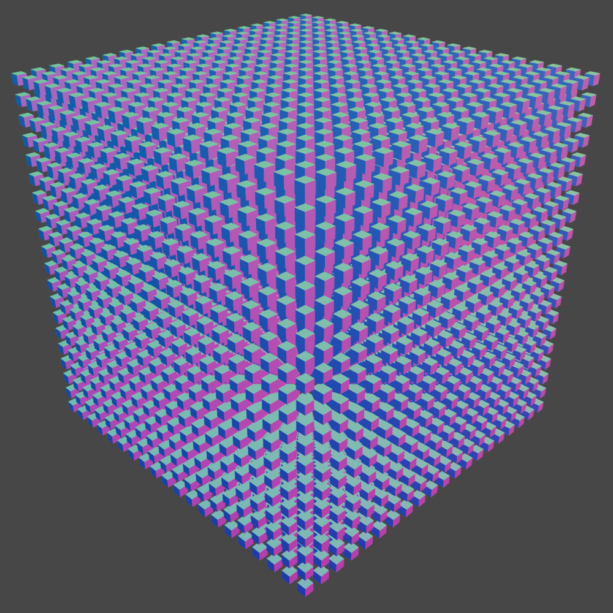
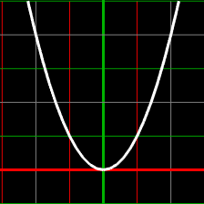
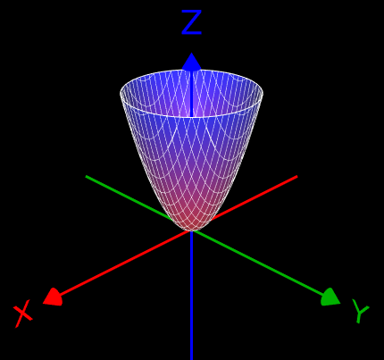
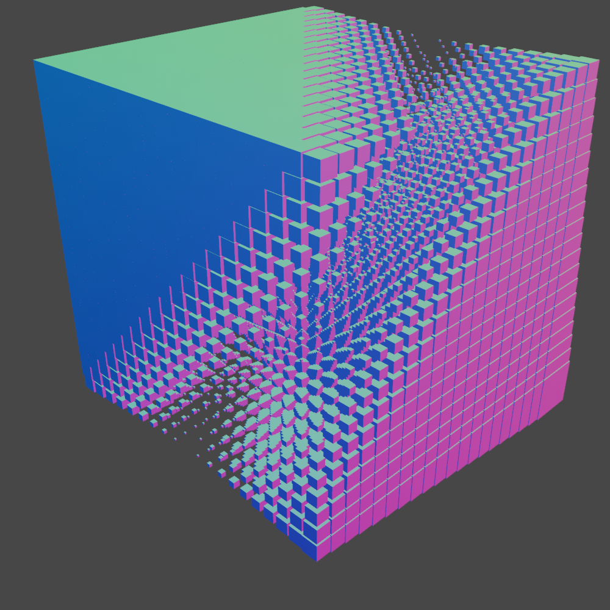
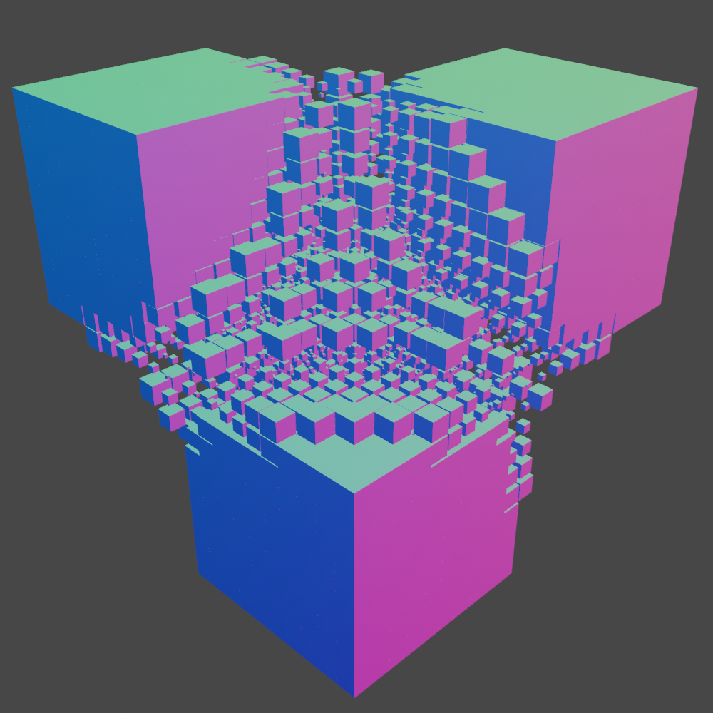
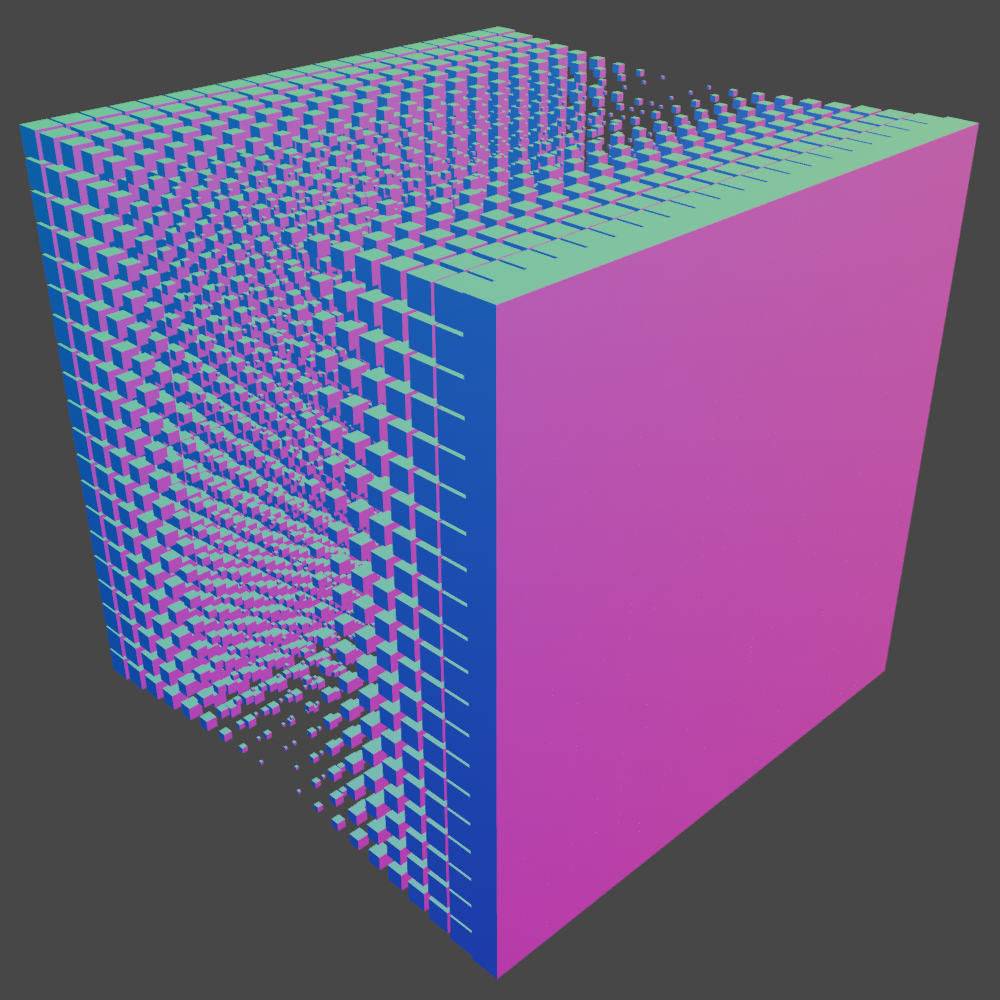
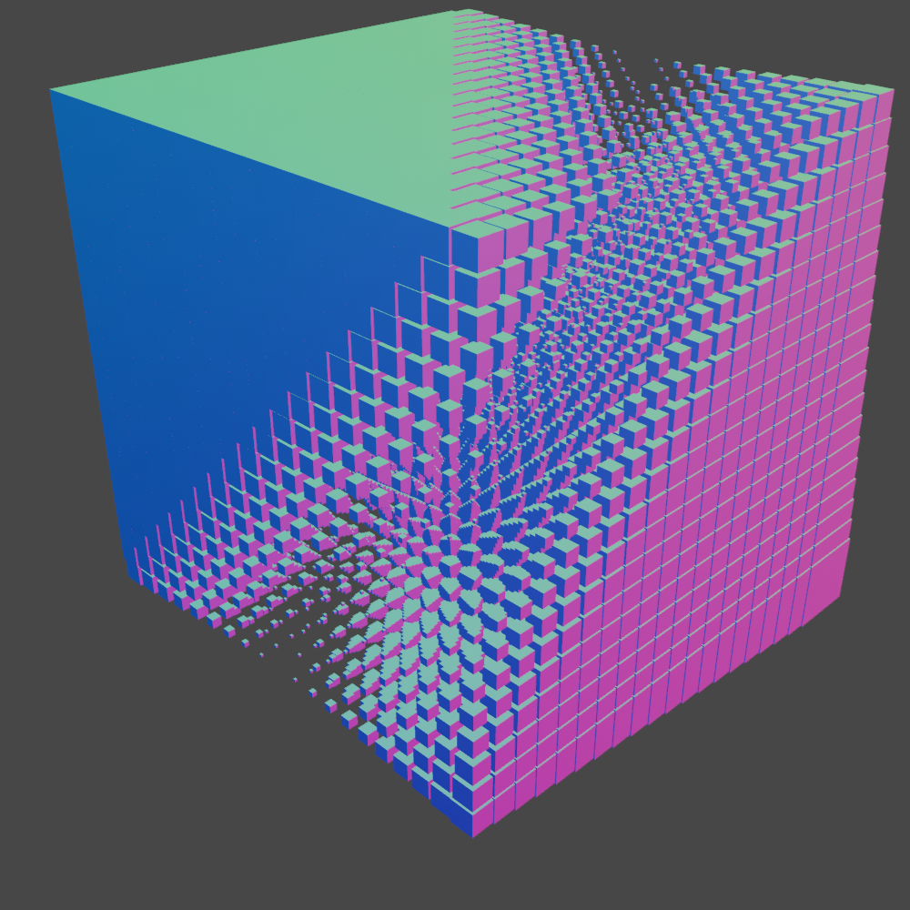
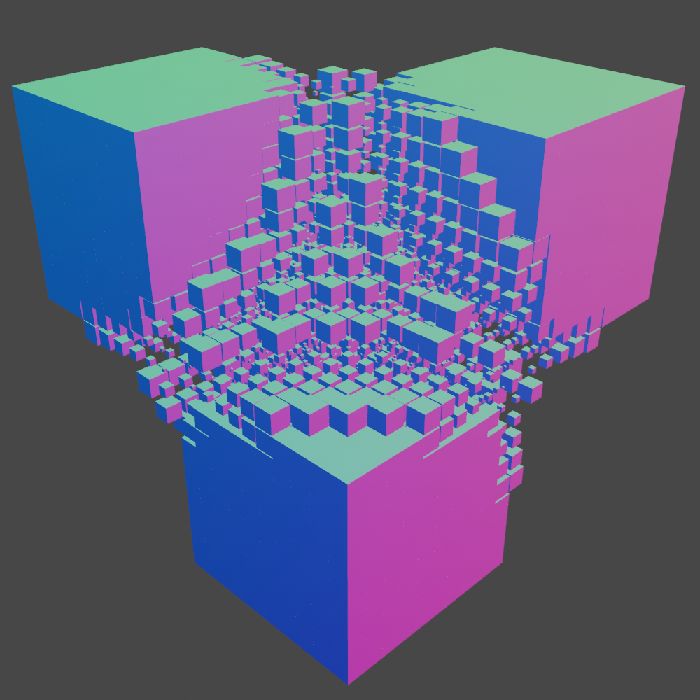
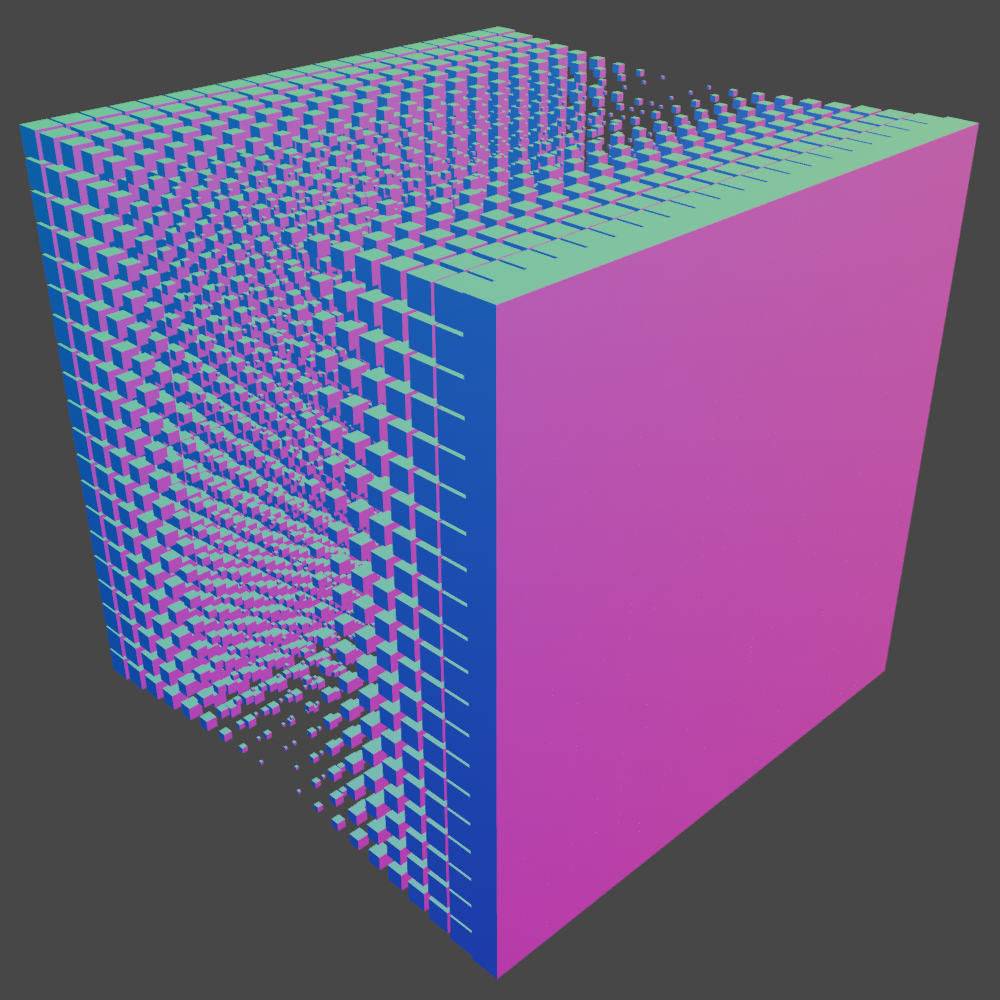

If you've done any non-embarrassing amount of math, you know what a function graph is. It takes a function in the form of \(f(x) \Rightarrow y\), and iterates over \(x\), placing a point on a 2D graph at \((x, f(x))\). Or, in layman's terms, it uses the function to draw a curve. You may have also seen a 3D function graph, which takes in a function in the form of \(f(x,y) \Rightarrow z\), iterates through \(x\) and \(y\), and plots a point at \((x,y,f(x,y))\).
Why am I iterating the same concept again? Because it makes the paper look more Professional™ Because, by looking at how 2D and 3D functions are graphed, we can learn how to extend it beyond the third dimension. Yes, it's possible to graph in the fourth dimension. And contrary to what you may think, it's actually incredibly easy.
I'm going to be real with you, I could write more in this section, but it would be incredibly boring. 4D functions are trivially easy to make, you probably already know how one would be made. It's literally just \(f(x,y,z) \Rightarrow w\). So instead let's just move on to the next section, which hopefully is slightly less boring.
So remember when I said that 4D functions are incredibly easy? Yeah, I was kind of lying. Not entirely-- making them and getting values from them is still trivially simple --but that's only half the problem. Actually, make that a tenth of the problem. Numbers are useless if you don't have a way to view them, and although just listing all of them technically works, the human brain is not very good at looking at a long list of numbers and figuring out what shape it's making. So instead, we must look for visual ways of graphing the function.
Visualizing four dimensional crap is always daunting, considering we can't hecking see four dimensional stuff. However, here we have a convenient way of plotting the function. The function takes in 3 parameters and iterates them, so we know we can plot it to a 3D volume. The function then outputs one value. All that is required, therefore, is to make a 3D array of dots or some crap, and change their appearance based on the value of \(w\). One possible method is scaling the dots according to \(w\).
This can work, however we must be smart about how the scaling is applied. If we just scale directly based on \(w\), then the dots would quickly get too big.
Instead, we should utilize a threshold. If the value of \(w\) is less than (or greater than, if that's your thing) the threshold, then that dot will be omitted. This alone won't solve the scaling issue, but if we map \(w\) thus that \(0 \Rightarrow 1\) and \(1 \Rightarrow 0\), then it should make the dots get smaller as \(w\) increases. A function that will satisfy those parameters would be \(|w - 1|\). Plugging that in, we get a much more coherent result.

So there we have it. That's what a parabola looks like in 4D. We did it, we got to the title of the paper. But I guess we should at least be slightly rigorous, so let's prove that this is an accurate visualization of a 4D function.
The visualization is cool and all, but it would be even cooler if we did some math to prove it's correct. This is where 4D crap starts to get hard, since now we have to actually think about it. To make this easier, let's go through 2D and 3D functions first, then extend that knowlege to 4D.
How exactly am I going to go about proving this anyways? Well, I'm not a very good mathematician, nor was my shower session that sparked all of this some life changing event that made me a master of dimensions, so instead I'm just going to go the boring route and figure out logically what a parabola should look like in four dimensions, then compare that to our visualized result.
First, let's take a look at 2D parabolas. You know them, you probably have some sort of opinion on them, they're the classic \(x^2\). Since 2D funtcions only have one parameter, there's not much to talk about here, but it should be noted that as \(x\) increases, the output of the function increases. This seems quite obvious, but it should be stated for later.
Next is the 3D parabola. Due to having two parameters, the function must be modified to be \(x^2 + y^2\). You might have noticed if you payed attention that the 4D parabola was \(x^2 + y^2 + z^2\). Thus, we can conclude that extending the parabola into more dimensions is as shrimple as adding in the extra parameters. However, that's irrelevant right now. What is relevant, is that now there are two parameters, which means two values that determine the output. One property we can observe is that in the case that \(x + y = n\), the output will always be the same for any combo of \(x\) and \(y\), as long as they equal \(n\). In order for \(x+y\) to equal \(n\) when given a value for \(x\), \(y\) must be set to a value that places \((x,y)\) on the edge of a circle with a radius of \(n\), thus producing the circular cross section of the 3D parabola.
Since a cross section of a four dimensional volume is three dimensional, in order for \(x+y+z = n\) to be satisfied on a 4D parabola, the points must be along a sphere with a radius of \(n\), since a sphere is obviously the three dimensional equivalent of a circle. Therefore, through this deduction, we can reason that the visualization must be accurate to what a 4D parabola looks like.
I suppose I might as well prove this while I'm at it. It should be noted that this section is dealing with function graph cross sections, not geometric cross sections. Does it make a difference? I think so.
Once again, let's start with the dimensions we can actually see. Let's take a 2D function, say \(sin(x)\), and take a cross section from it. To take a cross section, we have to make one of the parameters constant, thus locking it. \(f(x) => sin(x)\) only has one parameter, so we can change that into a constant, such as 5, giving us \(f(5)\). Because all the parameters are now constant, the function is now constant, so it can be fully solved for: \(sin(5) = -0.9589\dots\). There are no more paramters left to fill, so what we are left with is a 1D function, the result of the previous function coming out to \(f() \Rightarrow -0.9589\dots\). This function is constant, and generally we call this a hecking number. So 1D functions are all just constant numbers.
Now in 3D, we can apply the same technique to get a cross section of \(sin(x) + cos(y)\). We will lock one of the parameters, so let's go with \(y\): \(f(x, 5)\). Since \(y\) is now constant, we can remove the parameter and instead inject 5 directly into the function: \(f(x) \Rightarrow sin(x) + cos(5)\). This has made it into a 2D function, and by iterating \(x\), we can further reduce it to a bunch of 1D functions, creating an array of constant values, and giving us our cross section.
Finally, let's apply this to a 4D function. We'll use \(sin(x) + cos(y) + sin(z)\). Lock one of the parameters, so let's do \(z\): \(f(x,y,5)\). Removing the constant parameter, this makes the function into a 3D function: \(f(x,y) \Rightarrow sin(x) + cos(y) + sin(5)\). Now we can iterate \(y\), and doing so gives an array of 2D functions after removing the constant paramter, for example: \(f(x) \Rightarrow sin(x) + cos(5) + sin(5)\). Finally, we can iterate \(x\), making the functions constant, and giving us a final 3D array of constant values, concluding that the cross section of a 4D function is indeed 3D.
With all that done, let's have a list of some functions in 4D, made using very hastily put together and very dubious code. I swear like every one of these implements this in a different way or something.
 




